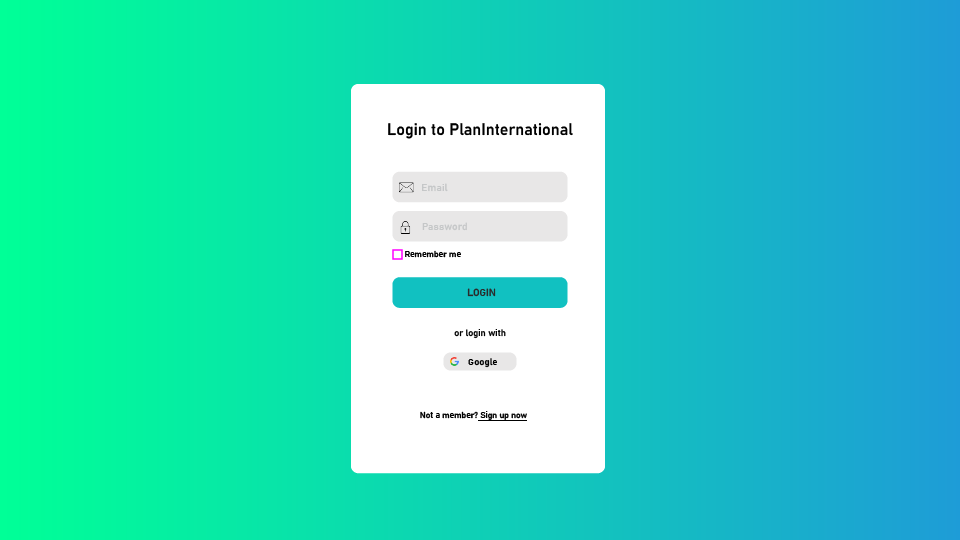
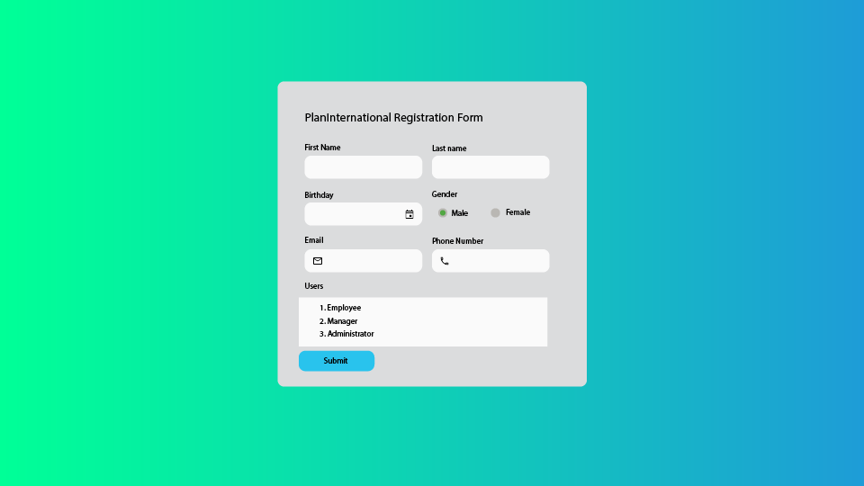
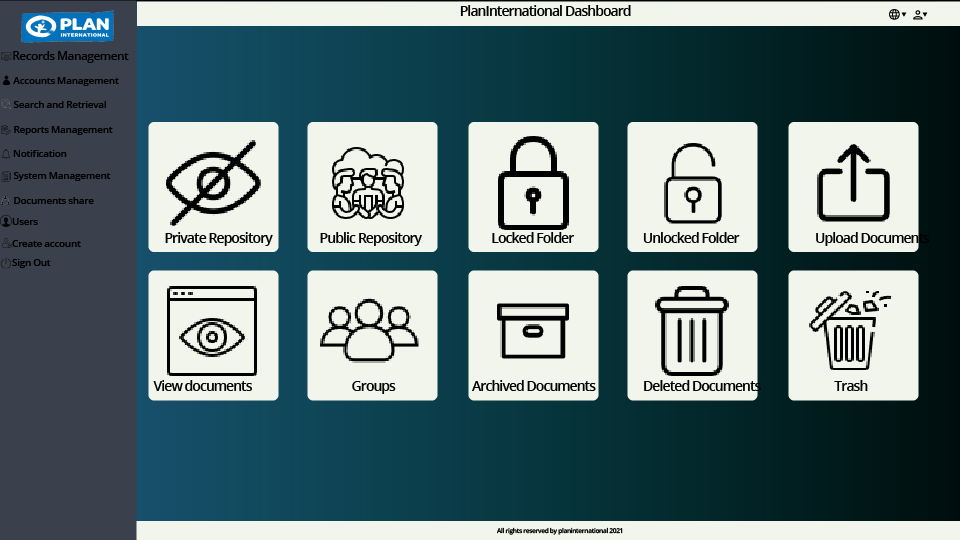
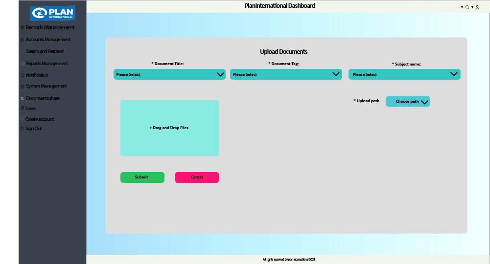

2.Overall Description
2.1 Product Perspective
Plan International is an organization, and they work for children's rights and equality for girls. For their organizations, they need a well-established Document management system. The system should be maintained by the admin authority and will be a function for users. Document manage system gives the users useful information that where the file location, how to upload, delete, retrieve, and scan bulk or a single document. It also has a mobile application that allows users to open an app and start using it. That makes it simpler for the user to keep track of different versions and changes made by other users. here I can mention some well-renowned sites already made for user's better workflow such as, pCloud, HubSpot, Alfresco, LogicalDOC etc.
2.2 Product Functions
At first User have to search Plan International URL or get the link from somewhere. When user click on the link, user can see a welcome page. Where he/she can search/ browse to find Documents/Upload Documents/Delete Documents/Retrieve Documents etc. If the user wants to upload any files , he/she need to sign up in Document Management System . The user will have a user panel where he/she can add or remove his/her files. The user can log out anytime. Here, the admin can also sign in but can not register. Admin will also have a panel for him/her .
To better understand a simplified user workflow diagram is given below.
2.3 User Classes and Characteristics
There are two types of user Classes in Document Management System.
First one is admin and the next one is user.
There are Three types of user.
The types of users are Manager, Employee and Administrator, they can edit and see the uploaded documents . User has no privilege to access in the database, but admin does. Both user and admin can sign in, but sign up can only done by users. User can search files, edit Profile etc. and get their desired information that they are looking for.
A UML use case diagram is given below to show the activities done by user Classes.

2.4 Operating Environment
Because Document Management System is a web base system it’s Operating environment is independent but we also make Document Management System for android user, so it need java for running the app
2.5 Design and Implementation Constraints
1.Admin needs to check and update the database for new Users detail list by manually or by the help of integrated API.
2. You can move all of your current paper documents to electronic copies once you've implemented a new document management system. Scanning with a document management program collects the written content, unlike most scanning techniques, which scan paper documents as images with no textual details.
3.Users devices having the system (Website/app) must be connected via WIFI or Mobile Data.
4. It is possible to index paper in several ways, but it is inconvenient, expensive, and
time-consuming. Images of documents in a document management system can be indexed in a variety of ways at the same time.
5. Ascertain document protection and accessibility.
6.User devices should have sufficient memories for uploading the files.
7. Archive and retrieve records in a timely and reliable manner.
8. A computerized data retrieval system. It's a place where you can store information.
9. An application instance that is capable of accepting User’s requests and responding appropriately.
2.6 User Documentation
The platform is just entering development stage .Once the development is complete and a prototype a released user documentation will be provided
2.7 Assumptions and Dependencies
One assumption for the android application is the application will be used mostly on high-end or latest phones as for a few years as the hardware requirement can only be met on those phones Document Management System is partially dependent on websites , for getting data. Document Management System only works with files . Users may find difficulties in operating system like IOS/MacOS/Linux etc.
3. External Interface Requirements
3.1 User Interfaces
DMS is a web based application and it will also run on android devices. Here, we have worked on UI on Adobe illustrator to represent the ideas of our application’s graphical interface. So, this User interface is based on our initial work, use case diagram, and workflow diagram. Here, we have attached some UI design below.
(1) Plan International login Page.

(2) Plan International Signup Page.

(3) Plan International Dashboard.

(4) Plan International Document Upload Window.

3.2 Hardware Interface
Since the DMS will run over the internet, the system will be required some hardware to connect with the live server through the internet. The system will also need a non-stop internet connection to get all the updates instantly. The software system will also work on mobile devices, so we will be required an android device to run the system. The system will have a scanning option on both web-based or android devices. The system will also have a connection with the scanner of the computer.
On the other hand, it will have a feature which is OCR. The Android version of the system will be able to read the characters from the scanned documents. The system will be required permission from the camera on the android version so that users can scan documents quickly. The system will be required a connection with Modem, Ethernet, WAN\LAN to run the system smoothly.
3.3 Software Interfaces
In this section, we’ll need a DBS to store Actor’s information. For, example their name, age, date of birth, and so on. In this case, we will try to use an RDB with Xampp, MySQL, and PHP to connect this RDB with the server. At first, we will have a login page, then a signup page. Non-registered users will be able to sign up by tapping the signup button. After filling in all the required information, then he\she will hit the submit button to sign up request. Then, Users account will be verified by an admin. The user will get a notification on her\his email to confirm the link and with a reset password option to sign in to the system.
The software interface is divided into some parts - a home\sign in the page, a signup page, and an Admin/Users dashboard. All the functionalities will be performed from the dashboard. The dashboard will contain a private/public repository, records management, Accounts, Search and retrieval option, report management, notification management option, system management, and some sorts of security & safety options. The software system can also be run in various platform.
3.4 Communication interfaces
For communication Interface, DMS may use HTTP or HTTPS to run the system. Users will be notified through email if any changes occur in his/her account. The system can be run on any web browser and the system may have some security features to prevent brute force attack in the system so, if any user enters wrong passwords 3 times, then the account will be blocked automatically & the user will notified through an email by the system.
4 System Features :
4.0.1 Description :
Using the actor list of our application we separated them into two section, one is client side and another is server side
4.1 System Feature - Home Page :
4.1.1 Description :
This is the initial start up client screen. when a client try to access we provide the landing page
4.1.2 Priority :
Priority level = Low
4.1.3 Sequence :
Precondition: Client connects successfully to the server by accessing the web address.
- Client send a request to the application's web address.
- Home (start up) interface shows up to the browser.
Post Condition: None
4.2 System Feature - User Registration :
4.2.1 Description :
This feature provides a registration form for new client. To explore everything or to take all the services we have, every client must have an account.
4.2.2 Priority :
Priority level = High
4.2.3 Sequence :
Precondition: Client connects successfully to the server by accessing the web address. Client clicked the Sign Up button from the home (start up) interface.
- User enters the URL into his/her desired browser and presses enter.
- System will show the home page.
- User clicks the "Sign Up" button.
- System displays the registration page.
- User fills out the required fields like name, username, email, password in the form, and presses the "Create Account" button or presses enter.
- System responds with a message saying that the registration is complete and an OK button appears.
- User clicks the OK button.
- System redirects user to the user home page.
Alternative approach:
- User forgets or does not fill up all of the required fields for registration.
- System responds with “Input is required”.
- User does not fulfill the conditions to create a new username or password.
- System will show the required rules to make username and password.
Post Condition: According to the role client will get an account and profile if every steps is perfect.
Abnormal Paths: If anything goes wrong to register then a message is displayed on the screen that inform the client to correct it.
4.3 System Feature - Log In :
4.3.1 Description :
This feature provides a login method to get access his/her account for registered client only but anyone can access this page by clicking on sign in button. This feature provides the control of the account to the account owner.
4.3.2 Priority :
Priority level = Medium
4.3.3 Sequence :
Precondition: Client connects successfully to the server by accessing the web address. Client clicked the Sign In button from the home (start up) interface.
- User enters the URL into his/her desired browser and presses enter.
- System will show the home page.
- User selects the login option from the home page.
- System displays the login page with fields for username/email and password.
- User fills out the login information into their required fields and clicks the login button or presses enter.
- System verifies the login credentials using Google Login or Active Directory as login authentication, and redirects the user to the user dashboard if the login details match.
- User spends an idle time of 15 minutes in the system.
- System logs the user out automatically.
Alternative Course of Events/Actions:
- User does not fill out the login credentials in the given fields; username or password is missing.
- System responds with “Username and password is required”
- User provides invalid login information.
- System responds with an error message saying “Username or password is incorrect” and blocks accounts with 3 failed login attempts.
Post Condition: According to the role client will get the profile page. Abnormal Paths: If Email or password is not correct then a message is displayed on the screen that inform the client to correct it. .
4.4 System Feature - Profile :
4.4.1 Description :
This feature shows the profile of a user. It contains all classes user created if the user is logged in.
4.4.2 Priority :
Priority level = Medium
4.4.3 Sequence :
Precondition: Client must be logged in to explore this feature.
- Logged in user can get the acces of profile view, update profile, etc.
- By clicking on the profile tag user can see in details profile information.
Post Condition: None.
4.5 System Feature - User Password Reset:
4.5.1 Description :
This high priority function allows users to change their password or request for a new password in case they forget their existing one or simply want to change it for security purposes
4.5.2 Priority :
Priority level = High
4.5.3 Sequence :
Actor: User
- User enters the URL into the browser's field and presses enter. System shows the home page.
- User clicks the login option from the home page. System shows the login page.
- User selects the "Forgot Password" option from the login page. System will redirect user to the Reset Password page.
- User enters the new password in the given field. System sends a conformation code to the user email and notifies the admin using an email.
- User enters the confirmation code in the password reset page. System verifies the confirmation code by matching user's entered code with code given in the confirmation mail, saves user's new password, and then redirects user to the user home page.
- User selects the account management option. System redirects user to the account management page.
- User clicks the reset password option. Repeat steps 3-5.
Alternative Course of Events/Actions:
- User enters a code that does not match the code given in the confirmation mail.
- System displays an error message saying "Invalid Code" along with a "Try Again" button.
4.6 System Feature - Uploaded Documents:
4.6.1 Description :
This top priority function allows users view their already uploaded documents as well as upload new files/documents.
4.6.2 Priority :
Priority level = High
4.6.3 Sequence :
Actor: User
- User enters the URL into the browser's field and presses enter.
- System shows the home page.
- User clicks the login option from the home page.
- System shows the login page.
- User enters the required login details into the given fields of the login page, and presses enter or the login button.
- System verifies the login information and displays the user dashboard in the home page consisting of the following options- public folder, private folder, uploaded documents and notifications.
- User chooses the “Uploaded Documents” option from the dashboard.
- System displays a list of all files/documents uploaded along with details like upload date.
- User can view/manipulate all the documents from this folder and click the save option.
- System saves any changes made by the user.
- User selects the browse option to browse for a selected file.
- System displays the files within the device allowing users to choose from these files.
- User selects the desired file(s) and clicks the Upload button.
- System uploads new file(s)/document(s) and if the selected file is an image, then it is converted to text before uploading. The system also creates an index field for file(s) to be uploaded.
- User adds upload and expiry date information for the file(s).
- System adds other parameters for archiving.
- User selects the option to upload index file in csv format.
- System accepts the csv file and links the attributes in designated file(s).
4.7 System Feature - Public Folder Management:
4.7.1 Description :
This is another high priority function which allows users to view file(s) within the public repositories that they are a part of and allows creator to edit those files as well.
4.7.2 Priority :
Priority level = High
4.7.3 Sequence :
Actor: User
- User enters the URL into the browser's field and presses enter.
- System shows the home page.
- User clicks the login option from the home page.
- System shows the login page.
- User enters the required login details into the given fields of the login page, and presses enter or the login button.
- System verifies the login information and displays the user dashboard in the home page consisting of the following options- public folder, private folder, uploaded documents and notifications.
- User clicks the “Public Folder” option from the dashboard.
- System displays a list of all the records along with other details of the files such as upload date and other users of this public repository.
- User can browse for selected file(s) and upload files within the folder using the browse and upload option as well as add upload and expiry date information.
- System uploads the file as well as creates an index field for that particular file.
- User can add preferred users and groups to the folder.
- System allows assigned users and groups to access the folder.
- User can view/edit documents from this folder and click the save option.
- System saves any changes made by the user.
4.8 System Feature - Private Folder Management:
4.8.1 Description :
Users can view/edit file(s) within the private repositories that they are a part of, and the creator of the file/folder can also add edit those files.
4.8.2 Priority :
Priority level = High
4.8.3 Sequence :
Actor: User
- User enters the URL into the browser's field and presses enter.
- System shows the home page.
- User clicks the login option from the home page.
- System shows the login page.
- User enters the required login details into the given fields of the login page, and presses enter or the login button.
- 6. System verifies the login information and displays the user dashboard in the home page consisting of the following options- public folder, private folder, uploaded documents and notifications.
- User selects the “Private Folder” option from the dashboard.
- System displays a list of all the records along with other details of the files such as upload date and other permitted users of the repository.
- User chooses the option to create a folder.
- System creates a new folder.
- User selects the lock folder option.
- System locks the folder and makes it private.
- User can browse for selected file(s) and upload files within the folder using the browse and upload option as well as add upload and expiry date information.
- System uploads the file as well as creates an index field for that particular file.
- User can add preferred users and groups to the folder and other users can only access the file if they are permitted.
- System grants or denies access permission depending on whether the user is assigned to the folder or not.
- User can view/edit documents from this folder and click the save option.
- System saves any changes made by the user.
5. Other Nonfunctional Requirements :
5.1 Performance Requirements :
The DMS will be able to function every operation quickly, and it must be as responsive as a typical system. It will be active enough so that it can perform 24 hours every day. Every operation will be processed within 2.5 seconds. Sometimes, it may vary depending on the task. For example, when a user will upload a document, then it depends on document size too. If the document size is too large, then it can take a bit more time to upload in the repository. So, it also depends on the user’s internet speed.
The system will be able to refresh, reload every window within 2 seconds. If any sorts of error occur, then the system will handle the error automatically. Otherwise, it will pop up an error message’s window. There will be a searching option in the system so when a user searches something in the repository. The system will be able to show the contents within 3 seconds. System performance can be improved by implementing SSD on the server’s computer. Users will be able to access the database quickly.
5.2 Safety Requirements :
The software system will also have an archiving feature that will help DMS from any extensive damage to the database's comprehensive portion due to any catastrophic failure. The system must have a backup option for this damage. The method may have a connection with an online live server to avoid disk crashes while running the system. An Archived database will help to back up user's information or files. The system will also have a recovery method that can help the users restore the old copy of the DB for safety purposes. So, the system may have a backup option every day at a certain amount of time.
The system must have standard certification, and the Maintenance feature can be improved if the company wants. The system will provide a five (5) hour response time on-site support, 9:00 AM to 5:00 PM, Sundays to Thursday. Even a Twenty-four (2a) hour resolution time and provision of service/replacement units if hardware issue is not resolved within 24 hours. Provide telephone support/helpdesk facility for initial analysis and resolution of hardware and software-related problems. Telephone support will be provided 24 hours x 7 days
5.3 Security Requirements :
In our software system, there will have some security features. For example, the password must be at least eight characters. Characters must be mixed type alphanumeric, unique character, upper-case & lower-case letters. The system will also have a brute force attack prevention facility. If any user enters the wrong passwords three times, then his/her account will be blocked automatically. Only the admin can unlock the account by providing a password reset option to the user’s email. User information will be kept confidential, and the system may have an encryption option to secure the data with the clients. Idle time of 15 minutes should automatically log out. Only alpha and numeric keys are allowed in the username and password fields.
5.4 Software Quality Attributes :
The software system will have standard quality attributes. It will be usable for those who have knowledge of how to run or use the system. We will try to keep the system adaptive, reusable, flexible for the users.
5.5 Business Rules :
The software system will follow the business criteria and license agreement. In our system, there will be some users who will have different work in the DMS. Employees, Administrators, and the manager will have different functions in the system. So, they must follow the code of conduct the business rule.
6.Appendix
6.1 Glossary
| Terms | Description |
|---|---|
| Project_Name | The name of our project with simplism and minimalism in foresight. |
| SRS | Software Requirement Specification. |
| IEEE | Institue of Electrical and Electronics Engineers. |
| Internet Protocol | A set of rules governing the format of data sent over the Internet or other network. |
| AR | Augmented Reality. It is the integration of digital information with the user's environment in real time. |
| Encryption | The process of encoding a message or information in such a way that only authorized parties can access it and those who are not authorized cannot. |
| API | Application Programming Interface. It is a set of routines, protocols, and tools for building software applications. |
| GUI | Graphical User Interface. It is a system of interactive components such as icons and other graphical objects that help a user interact with computer software. |
| SDK | Software Development Kit. It is a collection of software development tools in one installable package. |